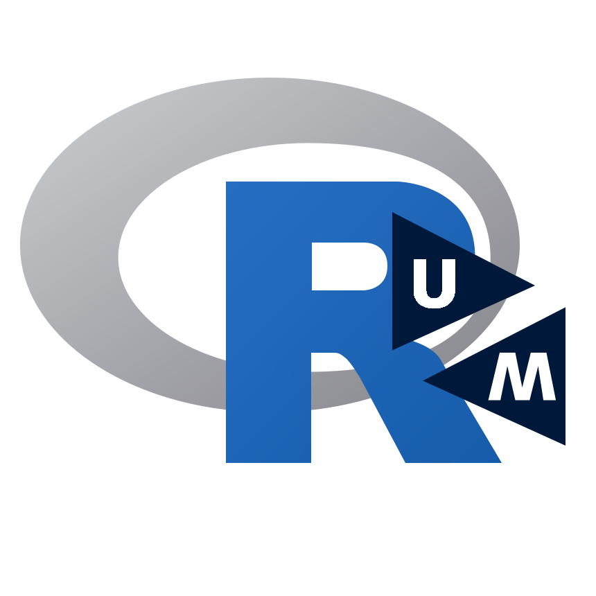

Home // Blog // Schedule // Materials // Topics // Members
 This is the website and GitHub repository for the R User Group at Maastricht University (RUG@UM).
R is a programming language and software environment for carrying out computations, manipulating and analyzing data, and creating various types of plots and graphics (see the R project website for more info). R is free and open-source software and has become the ‘lingua franca of statistics’ and the software of choice for analyzing data in various disciplines.
The purpose of the R User Group is to bring together those that are interested in using or that already use R (e.g., for teaching/learning purposes, conducting research, or really any type of data processing/analysis needs) and to facilitate the exchange of knowledge around R and its ecosystem.
Beginning meetings will focus on the basics of R, based on which we can start to explore more advanced topics. At the same time, the meetings should remain accessible also to those new to R, so we will strive for a mix of topics.
You can see the schedule for topics we have covered in the past and the topics for the upcoming meetings. Additional topics we plan on discussing/covering are mentioned here. All participants are invited to suggest additional topics.
The group is open to students at all levels, post-docs, staff, faculty members, researchers, and essentially anybody interested in learning more about R. There are no prerequisites for joining. Also, you do not have to be affiliated with Maastricht University to attend – the ‘@UM’ just refers to the fact that this is where the user group is located. Finally, there is no need to sign up or register for meetings; just show up as as often as you can!
Meetings take place roughly every two weeks on Wednesdays from 16:30 to 18:00. See the schedule for the dates of the upcoming meetings.
The group is not a ‘course’ (although beginning meetings might take on this form if this is what participants are interested in). Decisions about topics, meeting structure, and so on are made jointly by group members. We come together to learn from each other. Hence, members can present R related topics based on their experience and we can also invite guests/speakers to give a presentation on a particular topic.
In general, 45-60 minutes of a meeting are devoted to presentations. The remaining time is ‘free hacking’ and hangout time where (a) newcomers can examine the materials from previous meetings on their own (and, as needed, with the support from more experienced members), (b) members can explore other topics, and (c) members can just mingle with like-minded individuals.
Since meetings are meant to be ‘hands on’ (i.e., to the extent possible, we will demonstrate, try out, and practice using R), make sure to bring a laptop to the meetings with the current version of R installed, which you can get from CRAN. A lot of people work with R via RStudio (an ‘integrated development environment’ for R), which you also might want to install (and can get for free from here).
All materials (e.g., code, presentation slides) are openly and freely available via this GitHub repository. That way, members (and those interested in joining the group) can always check and stay up-to-date with what has been covered in previous meetings.